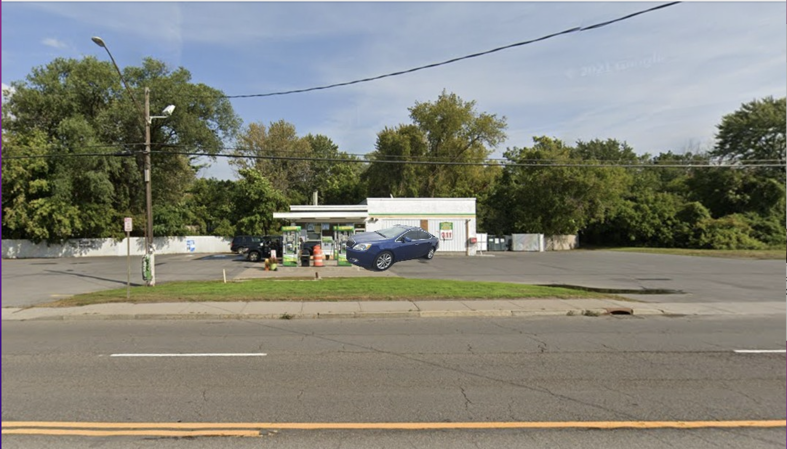

Latest

Man dies in Fatal Crash Wednesday
Syracuse, NY (AP)— A man has died in a fatal car crash in Syracuse, NY. State police said PHILLIP ANTHONY COBB, 35 of Syracuse, died after his vehicle crashed into a tractor-trailer. On Wednesday May 11th, 2022 around 12pm, police responded to the crash on I-690 E in Syracuse, NY. Investigators found that COBB was traveling east- bound when he lost control of his car and crossed over into the west-bound lane, striking a tractor-trailer head on. COBB was pronounced dead at the scene, he was the only person in his car. The tractor-trailer diver was treated by an ambulance and transported to Upstate University Medical with minor injuries. The road was closed for about three hours for an investigation and to clean up a diesel fuel spill. The investigation is ongoing.
Syracuse man found dead in overturned car
Syracuse,NY—A man was found dead after his car overturned in Onondaga County mid-day Thursday May 12th, 2022. The crash was reported around 12 noon. Near Thomson Rd Syracuse NY, according to a news release from the Onondaga County Sheriffs Department, on Thursday. The driver, PHILLIP ANTHONY COBB, 35 of Bronson St, was pronounced dead at the scene. He was the only one in the car. COBB was driving a 2015 blue Buick Verano near Thompson Rd when the car crashed, deputies said. The investigation is ongoing but deputies believe speed was a factor in the accident.
Verizon Fios Call Center Suicide
Syracuse, NY. (AP)— A Man involved in a workplace violence incident is dead the afternoon of May 12th, 2022 after committing suicide.
According to a spokesperson at the Verizon Fios Call Center located off of Thompson Rd. A security officer was called due to a disturbed employee threatening his life. Emergency crews responded to a man found dead within a blue 2015 Buick Verano. Verizon Fios has released a statement suggesting that workplace stress may have been at play along with other personal factors. Many are pointing to the many strikes Verizon has had over the years. PHILLIP ANTHONY COBB was identified as the man who shot himself in the head Thursday May 12th 2022, and was pronounced dead at the scene. Verizon Fios and the death are now under investigation.

In Memorandum of Beth A. Lockhart, Esq.
Long time attorney BETH A LOCKHART who serviced Onondaga county as a Family Law, and divorce attorney since 2007. was found dead in a fatal car crash Wednesday May 11th, 2022. Graduate of Albany Law School (2006), Le Moyne College (2002), and Onondaga Community College (1996). More information to follow as many clients will be updated with the change in circumstances due to her quick and sudden death.

Police identify man shot at Syracuse gas station by stray bullet.
Syracuse, NY. (AP)— Police have identified the man shot outside a gas station, Wednesday May 11th, 2022 in Syracuse. PHILLIP ANTHONY COBB, 35, was shot in the midsection outside the Conoco 6000 block of Thompson Rd, Syracuse police spokesperson Lt. Matthew Malinowski said. Cobb was pronounced dead at the scene. According to investigators he had no connection to the shooter. Employees at the Conoco informed investigators that it seemed as if Mr. Cobb was caught in the crossfires during a dispute between two unidentified men. Mr. Cobb it seems was simply stopping to get gas after work when shots were fired and returned between a car parked on the side of his 2015 Blue Buick Verano. He was alone in his car, camera footage shows him exiting his vehicle to pump gas as he is hit with bullets from a drive by shooter. Syracuse Police are asking the community for help identifying the shooter who was in a black chevy impala.

Syracuse man killed near Thompson Rd was fatally stabbed during a robbery.
Syracuse, NY.(AP)--Authorities report that the man stabbed to death on Wednesday, May 11th 2022, has been identified as 35-year-old PHILLIP ANTHONY COBB. He was stabbed a little after 12 noon either on his way to work, or during a break. His employer Verizon Fios (Call Center) located off of Thompson Rd states that they had noticed his absence from work and had attempted to call him. Per surveillance videos provided by a gas station he had stopped at, he was assaulted by a man in a black hoodie. PHILLIP ANTHONY COBB was alone in his car when he got out to use the fuel pump. The unidentified man stabbed him multiple times in the midsection and in the neck hitting a major artery. The gas station clerk reports that she called 911, but that PHILLIP ANTHONY COBB, 35, had bled to death by the time the ambulance arrived on the scene. Syracuse police are asking for help in identifying the man in a black hoodie, who got away on foot.

Man Committs Suicide At Verizon Fios Call Center
SYRACUSE, NY (AP)—An employee hanged himself from a railing at Verizon Fios Call Center off of Thompson Rd. Around 12pm Thursday May 12th, 2022. The man identified as PHILLIP ANTHONY COBB, 35 of Bronson St. left behind a note describing his feelings of work related and personal stress contributing to his ongoing battle with depression and incessant thoughts of suicide. He was pronounced dead at the scene. Many of his coworkers are shocked as they reported that he was friendly and was a long time employee. Verizon has had many strikes over the years many question if workplace stress and job security were a factor. Verizon released a statement encouraging employees to begin counseling and to create a more healthy work culture by working together to prevent workplace suicides.

Man who dies at the wheel identified
SYRACUSE, NY (AP)—Authorities report that man who died behind the wheel of a blue 2015 Buick Verano has been identified as PHILLIP ANTHONY COBB, 35, of Bronson St, Syracuse, New York. Police report that the man died while driving to work near Thompson Rd, on Thursday, May 12th 2022. He was alone in his car when he either had cardiac arrest or severe stroke that caused him to crash into a building. He died at the scene. The incident is still under investigation.